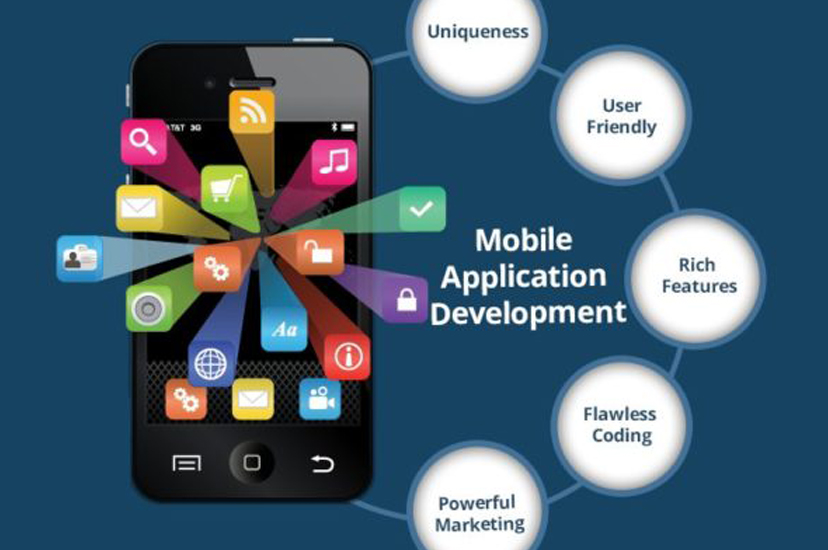
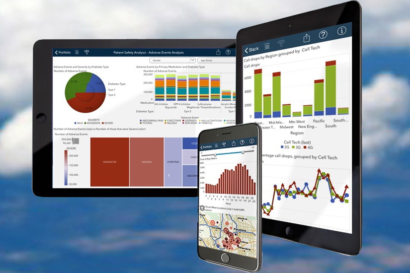
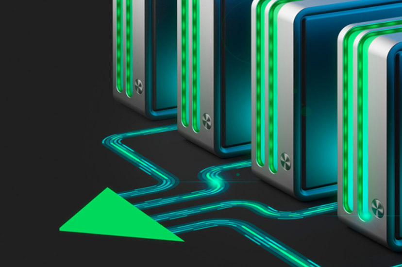
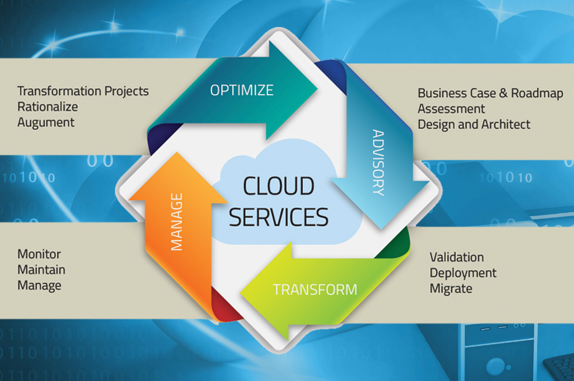
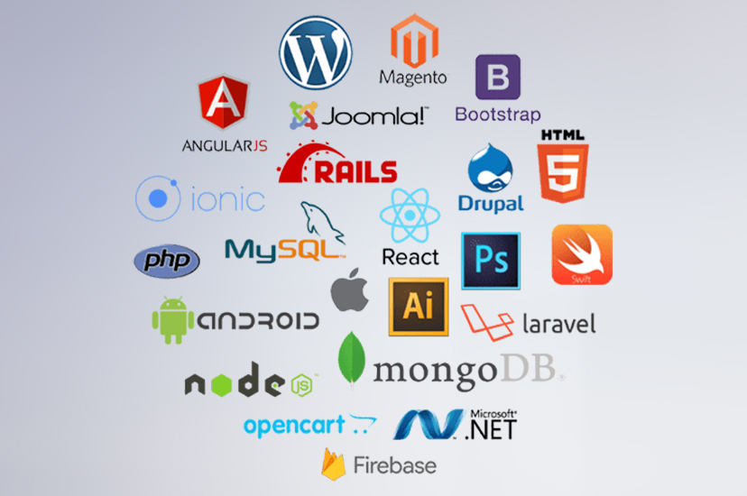

Mobility Solutions
Our expertise is targeted towards building Mobility Applications leveraging various approaches like Native, Cross Platform and Mobile Web Application Development. Our expertise ranges from development of Apps on IOS, Android, Windows Phone, Blackberry, Symbian and Mobile Web Technologies like HTML5. Our team understands limitations on various cross platform and other 3rd party integration points (including middleware) and leverage the experience in targeting the best solution.
Mobile applications are increasingly becoming an important channel for organization to reach their customers. In the near future, sales of mobile tablets are expected to outstrip traditional PCs and form the majority of web traffic. RyHiLL provides end to end application development services across the development lifecycle for Mobile applications targeting enterprise and consumers Solutions helping customers address the major challenges of “Which devices, Which Platforms”, “Native v Web vs Hybrid apps”, “Multiple form factors and device
Enterprises are increasingly adopting the BYOD trend (bring your own device) which brings its own set of challenges around how enterprise data and applications are managed without intruding on the personal data and apps on the device. RyHiLL helps customers in implementing the mobile application management solutions – enterprise application store, creating enterprise containers, implementing security policies, virtual box solutions – to enable the optimal management of enterprise data on the user’s device. We help our clients in improving these that would benefit in their long-run for success.

Implementing BI solutions for the mobile is gaining increasing traction and more than 33% of BI functionality will be consumed via handheld devices within the next few years. RyHiLL helps customers integrate BI and analytics into their mobile solutions - dashboards, Analytics, and rule based alerts to enable data driven decision making products - providing an accurate view of visitors, their behaviour and engagement levels helping in gaining key insights for future optimization.
RyHiLL Mobility Testing Methodology involves a staged and multipronged approach to assuring mobile application quality. We offer testing across multiplicity of Mobile Operating Systems and versions – Cross Platform and Cross Version Validation across – iOS, Android, Blackberry, Windows Mobile, Symbian, etc. Our Interoperability tests validate mobile applications across handsets – different hardware capabilities, form factors, screen resolutions, input methods, browsers, network standards across all mobile carriers in various geographies. Our mobile testing approach takes into account both natural user interface based functional testing as also non-functional aspects like usability, performance, security and compatibility.
Implementing BI solutions for the mobile is gaining increasing traction and more than 33% of BI functionality will be consumed via handheld devices within the next few years. RyHiLL helps customers integrate BI and analytics into their mobile solutions - dashboards, Analytics, and rule based alerts to enable data driven decision making products - providing an accurate view of visitors, their behaviour and engagement levels helping in gaining key insights for future optimization.
As enterprises look to support more and more complex mobile devices, the biggest challenge is to manage the security, data and the costs. RyHiLL provides services for engineering and enhancing mobile solutions with monitoring, configuration, management capabilities & security features.
A big challenge with mobile solutions is to manage costs and ROI. RyHiLL enables customers to quickly mobile enable their business while controlling costs. We provide managed services in conjunction with cloud based hosting of data and applications which helps in minimizing upfront investments while providing the customer a mobile footprint.
Cloud Computing
Our enterprise computing consolidation services provide strategic technology direction for data centre design and assessment. By aligning your IT infrastructure to business goals, we empower you to become more responsive to business needs. We offer leading technology to virtualize your IT infrastructure and improve your return on assets. We help make your IT service delivery dynamic and in step with changing business processes. Add in our thought leadership and you have a partner who can help create a more effective and innovative IT environment.Offerings -
This service monitors your business systems and practices to determine their overall health in the enterprise. We use the best and latest solutions to design and implement effective ESM systems that keep your servers, mainframes, storage devices and applications regularly checked. Our ESM offerings include consulting, design and deployment, end-to-end managed services, and service management.

Cloud Services

Our cloud infrastructure and hosted solutions enable customers with enterprise-class capabilities and provide flexible, modular growth on demand. In addition, our cloud infrastructure consulting services deliver a prescriptive approach to analysing and achieving enterprise cloud objectives, and our cloud management services provide an array of remote service offerings to support your private, public and hybrid cloud environments.
Spanning consolidation, rationalization (virtualization and the cloud), and data center optimization, our enterprise computing management services include:
* Server/OS management.
* Storage - SAN/NAS management.
* Mainframe management services.
* Remote database management.
* Mainframe management.
* Middleware management.
* Data center services.
Put our expertise to work on your IT challenges, and be well on your way toward increasing productivity and transforming your business.
We help simplify the virtualization of your IT infrastructure. Our virtualization services team designs flexible IT infrastructures that allow organizations to allocate IT resources as required. Our virtual maturity model determines where you stand, and then we work to maximize the business benefits that virtualization can offer.
Social Computing
In an industry synonymous with creativity and innovation, the bar for business excellence is set high. You need to embrace new technology, develop new distribution models and satisfy the demands of a voracious and outspoken consumer. At the same time it’s important to manage costs, exceed stakeholder expectations and comply with new regulations. There’s always another challenge just around the corner. Our network of professionals collaborate and share knowledge around the world, to provide consistent, high-quality service and leverage our leading market share position to provide you with actionable information, quickly and reliably.The rapidly changing digital marketplace is placing new demands on systems and processes.
Many M&E companies are taking a top-to-bottom look at the infrastructure that supports both new and old business models.
Many are finding that their organizations, processes and tools are not up to the task of supporting the new digital business models.
We help our clients
* Develop processes and organizational infrastructure with the necessary flexibility to keep pace with the speed of digital innovation.
* Re-evaluate and improve systems, processes and policies across both traditional and digital platforms.
* Build IP management systems that encompass the entire life cycle associated with managing contracts, rights use and royalties.
* Deploy a rights management system that tracks which content can be used when, where and in what formats.
* Automate rights systems to increase speed to market and decrease risk of contract violations.
* Focus on digital supply management to ensure that media assets can be easily found and distributed across media platforms.
* Increase data capture to support new business models and drive decision-making.
We work to anticipate market trends, identify the implications and develop points of view on relevant industry issues. Ultimately, we assist you in meeting your goals and competing more effectively. For media and entertainment companies, integration and adaptability are becoming critical success factors. We help you in delivering and making difference.
Web Technology
The consumer expectations, technical innovations and the explosive growth in the number of people using the web have significantly evolved in the way people are using the web today. The web is in our workplace, our living room and in our pockets. Today, when we access the web, it can identify who and where we are. The web is no longer accessed just through a browser + desktop combination. There are a number of devices supporting web, many more websites, more content and more bandwidth for more people to access the web. Web Technologies form one of our core strengths.Our focus areas are
* Microsoft
* Java
* Open Source (PHP)
Delivering custom solutions that are built on top of prevailing technologies is one of our core competencies at RyHiLL. Our solutions are reliable, easy to maintain, extensible and secure and adheres to prescriptive guidance and best practices. Our delivery model is agile in order to provide adequate visibility to our customers during the course of the project and deliver predictably with high quality.
The following are our focused offerings within the scope of custom application development.

We at RyHiLL, offer a spectrum of services in the Multi-Channel applications space which includes User Experience design, Architecture consulting, Application development, and upgrading existing web applications to Multi-Channel applications. In addition, we have built a portfolio of reference architectures which can be easily customized for any specific needs that our customers may have. Coupled with our Agile delivery model, these reference architectures creates a definite advantage, in terms of time to market, for all our customers.
2. Portals: Organizations today face the challenge of information overload within and across businesses. This is compounded by the proliferation of disparate IT applications creating information silos. Our portal solutions are centered on, enterprise-wide presentation tier infrastructures that form a common point to access information while addressing security, compatibility and availability. We provide both consultative and implementation services on top of these solutions to leverage such information by effective knowledge and content management.
3. Enterprise Content Management: Enterprise Content Management enables organizations to simplify the storage, security, versioning, workflows, and retention of content. Numerous factors drive businesses to adopt such solutions, chief being the need to increase efficiency, improve control of information, and reduce the overall cost of information management for the enterprise.
We at RyHiLL, offer a spectrum of Enterprise Content Management offerings addressing Web Content Management, Document Management, Records Management, Social Content Management and Digital Asset Management. These services help enterprises to meet business continuity, process integration and compliance requirements by optimizing every point of the organization's vital asset lifecycle.
Business Intelligence
Business Intelligence (BI) enables a company to gain insight into its critical operations through reporting applications and analysis tools. Well-designed BI applications can give anyone in your company the ability to make better decisions by quickly understanding the various “information assets” in your organisation and how these interact with each other. These assets can include customer databases, supply chain information, personnel data, manufacturing, product data, sales and marketing activity, as well as any other source of information critical to your operation. A robust BI application, which includes integration and data cleansing functions, can allow you to integrate these disparate data sources into a single coherent framework for real-time reporting and detailed analysis by anyone in your extended enterprise – customers, partners, employees, managers, and executives.Our offerings include consulting and development services to help clients define their strategy and solution architecture. We deliver and manage data warehousing, business analytics and reporting applications that provide tangible business benefits.
Offerings –
BI ServicesTo help clients meet the demands of today and plan for tomorrow, we offer the following services:
* Business Strategy and Enterprise Metrics: Enterprise information management strategy and roadmap development, business information health assessments, businesscase development, platform and tool evaluations, architecture definition, and enterprise metrics management.
* Business Process Application: Event monitoring, BI adoption, organizational deployment, and user empowerment.
* BI Capabilities: BI rationalization and consolidation, data visualization and analytic applications development, BI Centre of Excellence, cloud reporting.
* Analytic Applications: Enterprise analytics services, industry solutions, and web analytics.
* Information Infrastructure: Data modelling, data architecture, data integration Centre of Excellence, master data management, metadata management, data quality management, data warehouse performance improvement, design and development, quality assurance, and auditing and data governance.
Our focus on innovation and business processes is underscored by a host of industry-specific solutions. These solutions can accelerate time-to-market by employing features such as built-in data models, Key Performance Indicators (KPIs) and executive dashboards. We have ready-to-deploy solutions for the following industries:
* Banking and Financial Services.
* Insurance.
* Life Sciences.
* Healthcare.
* Manufacturing & Logistics.
* Retail.
* Hospitality.
* Energy & Utilities.
We also recognize the importance of personalization, community, and context-aware Business Intelligence.
Security
How can you comply with increasingly stringent security norms while continuing to have the flexibility to explore emerging opportunities?At RyHiLL, we draw on the expertise of a large pool of experienced security professionals to offer security solutions that address the key challenges many enterprises face.
Our services aim to improve the agility, flexibility and cost effectiveness of the next generation needs of Information security and compliance programs.
We ensure risk-compliant organizations with strong identity and access governance, data protection, privacy and strong cyber security monitoring & management.
We offer end-to-end integrated security & compliance solutions delivered through a combination of:
* Advisory Services.
* Transformation Solutions and Managed Services.